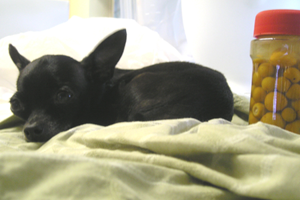
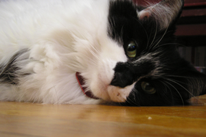

Dogs Have Better Noses
Dogs can discriminate odors at concentrations nearly 100 million times lower than humans can. The wet nose is essential for determining the direction of the air current containing the
smell. Cold receptors in the skin are sensitive to the cooling of the skin by evaporation of the moisture by air currents.

Cats Have Better Tongues
Cats are known for their cleanliness, spending many hours licking their coats. The cat's tongue has backwards-facing spines about 500 micrometers long, which are called papillae.
These are quite rigid, as they contain keratin. These spines allow cats to groom themselves by licking their fur, with the rows of papillae acting like a hairbrush.